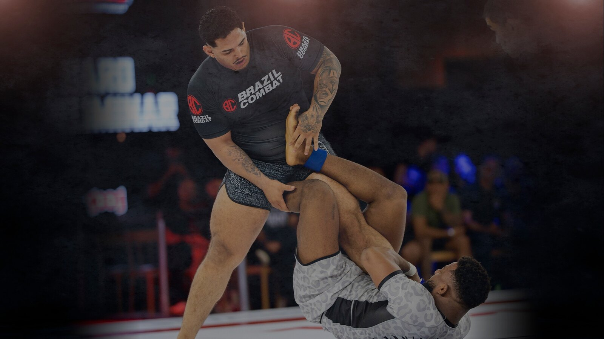
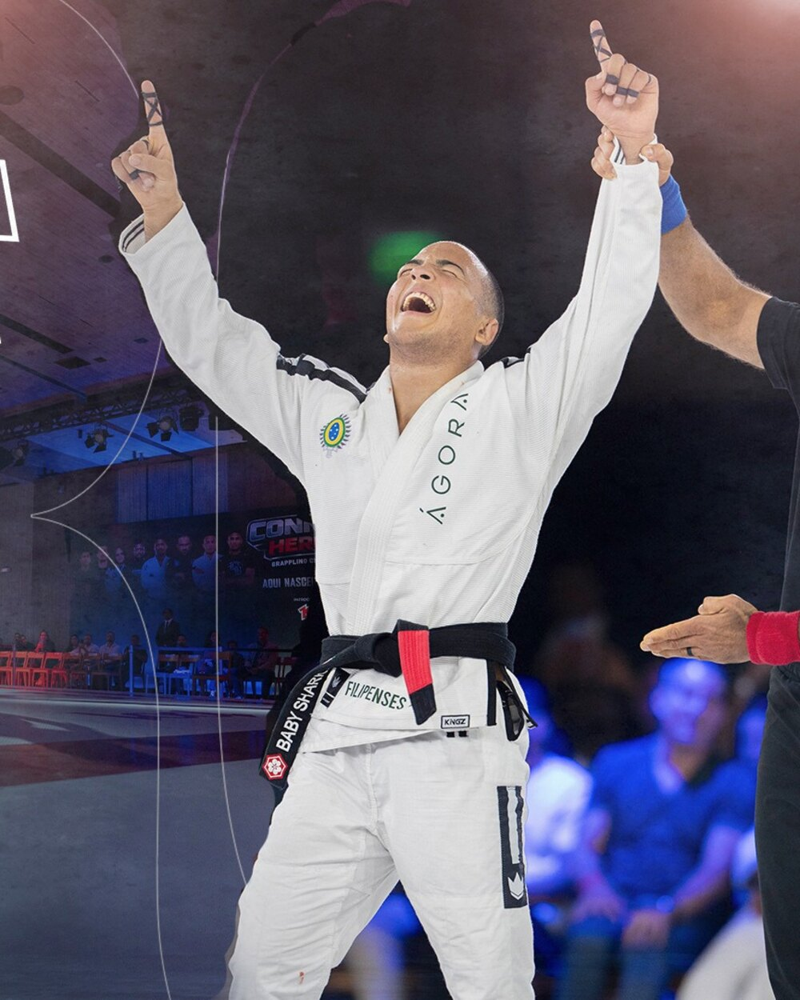
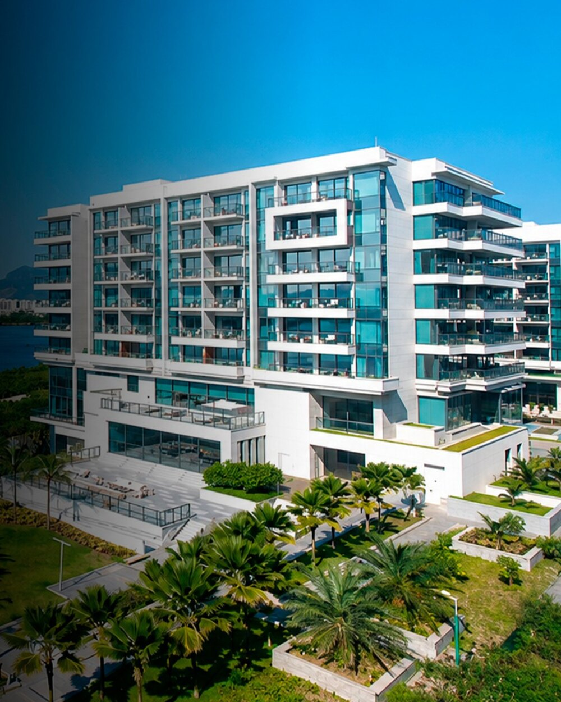

Connect Heroes
2026.
Jiu-jítsu tratado como espetáculo: combates selecionados, fight week em hotel cinco estrelas e transmissão em TV, streaming e redes.
 CONNECT HEROESDivulgação Connect Heroes
CONNECT HEROESDivulgação Connect HeroesO QUE MARCOU
ESTA EDIÇÃO.
Esta página é um registro editorial em atualização contínua. Apresentamos somente informações sustentadas por referências identificáveis, com prioridade para documentos oficiais e fontes da organização.
O Connect Heroes nasceu no Rio de Janeiro com uma tese simples: a técnica continua no centro, mas a experiência ganha outra dimensão. A primeira edição aconteceu no Grand Hyatt Rio de Janeiro, com fight week dentro do próprio hotel, e chegou ao público por três caminhos ao mesmo tempo: TV, streaming e redes. A segunda edição muda de cidade e acontece em dezembro, em Niterói, com lançamento para a imprensa no MAC Niterói, para convidados especiais. Em volta do evento existe um plano de longo prazo, o World Connect Heroes, que projeta o esporte até 2032.
CALENDÁRIO
DA TEMPORADA.
| Etapa | Quando | Situação da data | Fonte |
|---|---|---|---|
| 2ª edição · Niterói, RJ | 12 de dezembro de 2026 · 1 dia | Anunciada | Informado pela direção do projeto |
| Lançamento para a imprensa · MAC Niterói, para convidados especiais | data a confirmar | Anunciada | Informado pela direção do projeto |
| 1ª edição · Grand Hyatt Rio de Janeiro | 11 de julho de 2026 · 1 dia | Divulgada | Sportbuzz, Connect Heroes 1 no Grand Hyatt Rio |
Arraste a tabela para o lado para ver a situação e a fonte.
FATOS
DOCUMENTADOS.
A primeira edição foi realizada no Grand Hyatt Rio de Janeiro, hotel cinco estrelas, com a competição concentrada em um único dia.
A fight week acontece dentro do próprio hotel, de quarta a domingo: coletiva de imprensa, pesagem e atletas hospedados no local, gerando conteúdo antes, durante e depois do evento.
A transmissão ao vivo pela Xsports foi acompanhada por 240 mil televisores, segundo o mídia kit oficial do evento.
Entre 11 de julho e 9 de agosto de 2026 o evento foi reprisado 27 vezes nos canais da emissora — uma competição de um dia que seguiu no ar por semanas.
A transmissão também esteve nos canais Combate e SporTV 3, acessíveis pelo Globoplay.
No YouTube o material registrou 149 mil visualizações, 63 mil horas de exibição e 87 mil aparelhos conectados, dos quais 54,9% eram televisores.
Os reels do projeto somaram 25 milhões de visualizações ao longo de julho, e o conjunto de transmissão e reprises passou de 2 milhões de visualizações.
Os números de audiência acima são declarados pela produção no mídia kit oficial (V6) e ainda não têm relatório de emissora nem print de painel anexado a esta página.
A segunda edição está anunciada para dezembro de 2026, em Niterói, mudando de cidade em relação à primeira.
O lançamento para a imprensa acontece no MAC Niterói, o Museu de Arte Contemporânea, para convidados especiais.
QUEM ESTEVE
EM CENA.
Atletas
- Fabrício Andreymain event divulgado no material oficial da edição
- Meyrammain event divulgado no material oficial da edição
Fonte: Connect Heroes no Instagram
Nomes recuperados da programação oficial e da cobertura de imprensa de cada edição, com a fonte ao lado. Onde as publicações divergem sobre palco, dia ou grafia do nome, a divergência está escrita na própria linha em vez de ser resolvida por conta própria. Aparecer aqui significa ter se apresentado no evento, não ter sido contratado pela Cadillac.
A OPERAÇÃO
DESTA EDIÇÃO.
operacao.fichas.connect-heroes-2026 · inscritosoperacao.fichas.connect-heroes-2026 · publicooperacao.fichas.connect-heroes-2026 · capacidadeoperacao.fichas.connect-heroes-2026 · staffoperacao.fichas.connect-heroes-2026 · fornecedoresoperacao.fichas.connect-heroes-2026 · dias_montagemoperacao.fichas.connect-heroes-2026 · palcosOs campos em branco dependem de dado que fica com a produção: planilha de credenciamento, mapa de equipe, contrato de locação do espaço e lista de fornecedores. Preencha em operacao.fichas no content-model.json e rode o gerador.
POR DENTRO
DO ACONTECIMENTO.

Divulgação Connect Heroes
Divulgação Connect Heroes
Divulgação Connect HeroesOs três espaços acima entram no ar assim que os arquivos forem colocados em assets/fotos/ com esses nomes. Publique apenas imagem com direito de uso verificado.
ALÉM DA ARENA.
Eventos como este articulam pessoas, território, produção e marcas. A leitura da Cadillac apresenta contexto e oportunidades do setor sem inventar métricas de público, resultados ou atribuições contratuais.
Explorar dados e métricas